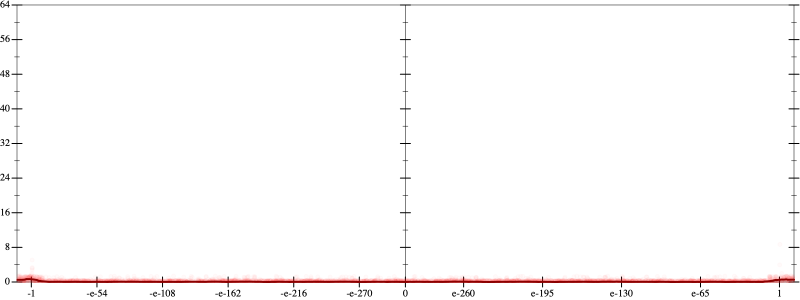
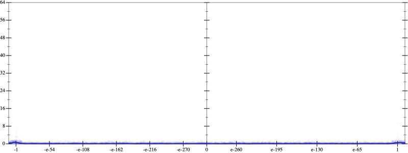
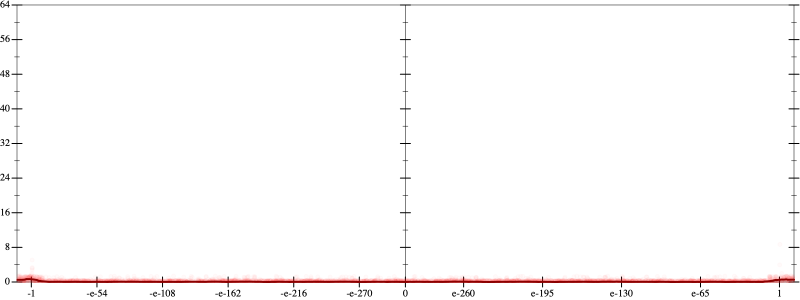
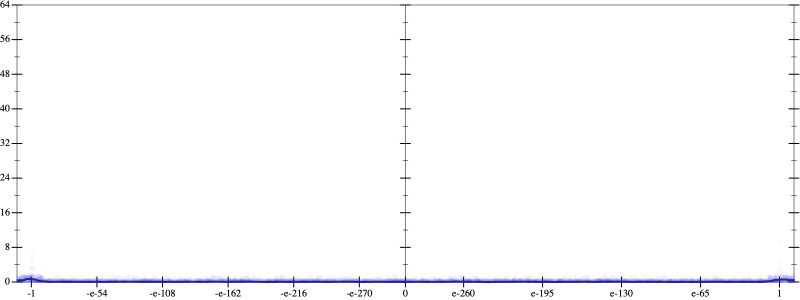
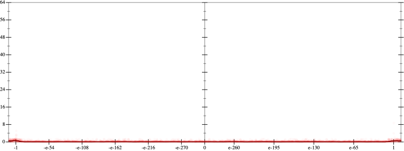
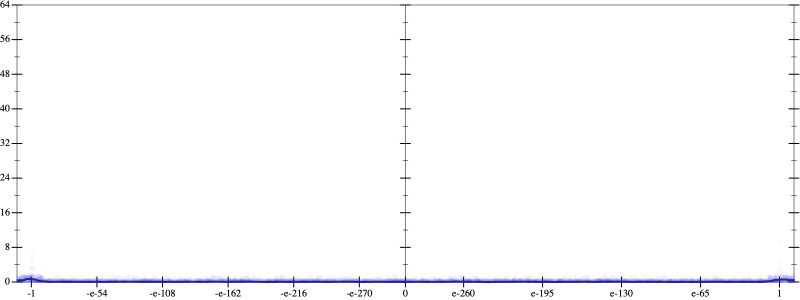

Error
 
Bits error versus x
Bits error versus x
Results
Initial program 0.1
rmApplied pow30.1
Time bar (total: 22.0s)Debug log
herbie shell --seed 827074020
(FPCore (x)
:name "5"
:pre (and (>= x -1000000000000.0) (<= x 1000000000000.0))
(+ (+ (* 1.875 x) (* -8.75 (* (* x x) x))) (* 7.875 (* (* (* (* x x) x) x) x))))